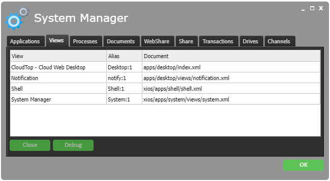

Stepping outside of the individual applications there is a lot of extra infrastructure needed to make applications run together within the same runtime environment and browser tab. Assuming the actual execution, rendering, and sharing of resources are solved problems, to really unlock the individual application's potential they need to cooperate and be able to open in multiple instances similar to how several emails or Word documents can be opened in a desktop operating system.
There are at least three areas of cross-application integration when we have isolated to a single system: datatype controls of actions, moving of data through user actions, and real-time sharing of resources between running applications and across different clients and identities.
Datatype-based actions are commonly implemented in operating systems as a filetype register, where based on some meta-data property such as filename extension or mime-type property, the system could find the appropriate file icon and associated application to open it. We have already described how the file type-based meta-data extraction of properties works, but the datatype manager can do more. A file type, besides the user presentation data like description and icon, contains rules for how to identify a file type. For XML that is through one or more of namespace, root node, file extension, or mime-type. The definition can also define default applications for actions like open, edit, and preview that the desktop application can call without knowing what application will take over.
That kind of handover is simple as the application is given references to full documents that it is pre-arranged to handle. If however the user decides to drag-and-drop something or copy-and-paste it the application must be able to handle subtrees or fragments of documents. The approach XIOS/3 and CloudBackend has opted for is that all data within the system is handled by reference. Every document has a unique URL. To that we add an XPath to denote the relative root, useful when documents are inlined in other documents, and a set of XPaths that represents a selection within the document. Thus a drop or a paste action in a UI component in one application is just a reference to the same data as in the first application. This have some similarities to the XPointer and XPath standard, but combines a base selection with additional selections relative to the base selection. Think, a file list and selecting a couple of files.
Finally we have the real-time sharing of resources enabling inter application collaboration, but also collaboration between users across multiple clients, but with access to the same XML document in the data model. With the abstracted data model and security model, it becomes straightforward and ties into the architecture of intelligent UI components of XIOS/3. Since all applications are accessing data by reference, the built-in XML transaction manager just looks at all incoming changes and sends out change notifications to applications and any listeners in the cloud, if it happens to observe that a node is subject to change.
All internal bookkeeping and state is of course happening through XML documents, which themselves are subject to inspection. The System Manager application simply binds the various internal documents, like process list, application list, document cache, and transaction log, to grid UI components that display the content as tables. Things become a lot easier when everything is XML.
Figure 4. The System Manager.
|  |